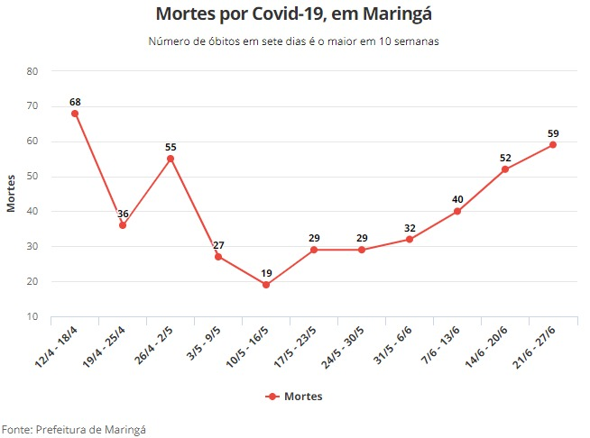

de Maringá
de MaringáCidade de Maringá apresenta alto número de casos e mortes por Covid-19
Entre os dias 21 e 27 de junho, foi registrado um aumento de 13% no número de óbitos comparado à semana passada.
Maringá encerra a semana com o maior número de mortes por Covid-19 em 10 semanas, segundo dados divulgados pela Secretaria Municipal de Saúde.
Houveram 59 óbitos em decorrência do Covid-19, representando um crescimento em comparação com semanas passadas.
Maringá também teve o encerramento da semana com 1.821 novas infecções, maior número em 10 semanas. Em comparação com a semana anterior, o aumento foi de 2,3%. O número de casos ativos da doença está em 2.987, de acordo com o Município.
